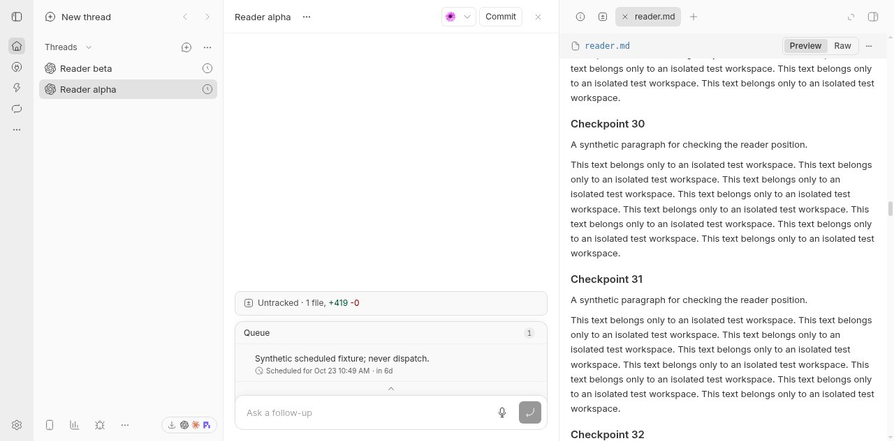
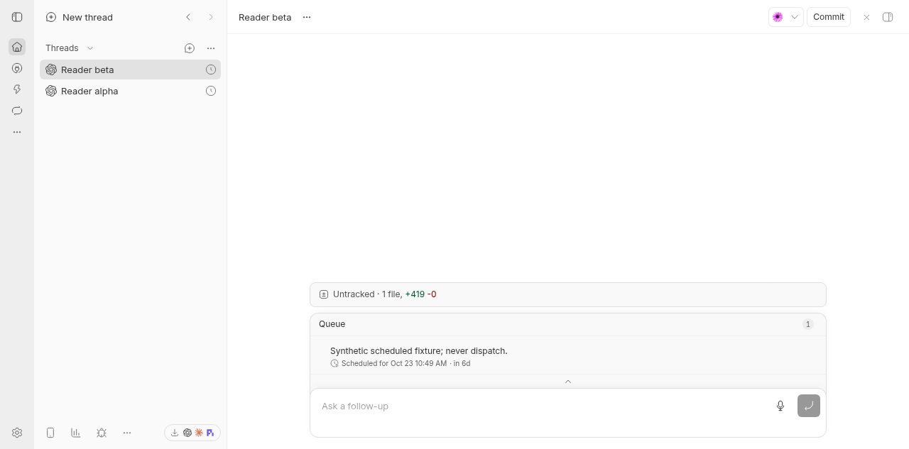
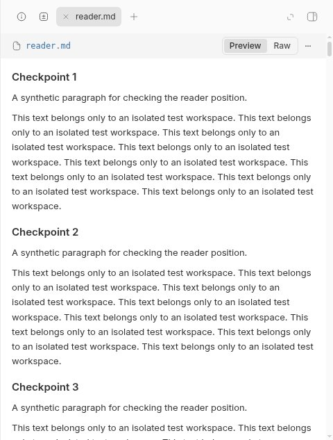
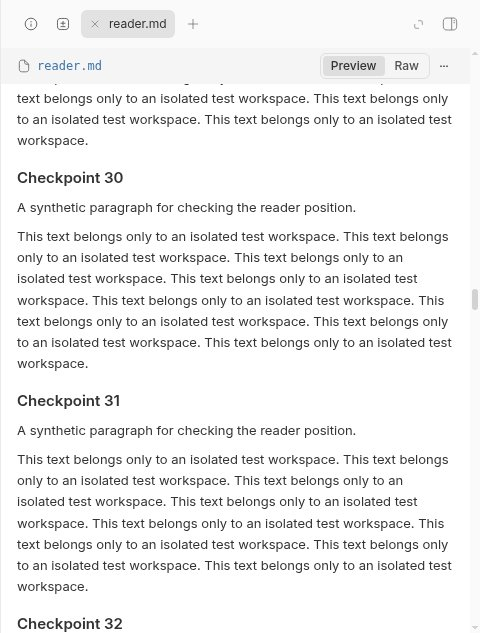

#5615 · Thread-scoped Markdown reader state is discarded
Verdict: REPRODUCED · Root-cause confidence: high
1. TL;DR
The built-in Markdown reader remembers its position when switching tabs within a thread, but loses it after navigating to another thread. A newly authored regression suite fails on trusted main in two separate clean checkouts. A live isolated browser reproduction also changes the scroll offset from 6400 to 0 after a sidebar round trip, with the same file tab still open. The panel owns one instance-local offset map even though its tab lists belong to separate threads; pruning a different thread’s tabs discards the first thread’s offsets. Remounting loses the map as well, and identical file tab IDs can instead leak an offset between threads.
2. Claims vs findings
| Claim | Finding | Evidence |
|---|---|---|
| Cross-thread navigation resets an open Markdown preview. | Verified | Browser: 6400 → 0; component: expected 640, received 0. |
| Same-thread tab and hyperlink returns still work. | Verified | The original tab/hyperlink cases pass before and after the change. |
| Tab-absence pruning is responsible. | Verified | Real panel receives another scope and a browser-only tab set; returning loses the saved value. |
| Content loading or inability to scroll is the cause. | Refuted for this reproduction | The rendered browser file is 15674 px tall both times; the component uses already-ready content. |
| The reporter’s operating-system setup is required. | Not required; macOS not tested | Reproduced on Linux/Chromium and jsdom with no provider turns. |
3. Environment
- Public repository: get-bb/bb, trusted origin/main at
01affc197dc621cddc7343e09b1c5c10a5b9efcb; source package version 0.46.1. - Linux 4.19.0-gvisor; Node 22.19.0; pnpm 9.15.0; Vitest 4.1.1; Chromium 155.0.8059.39.
- Both checkouts installed with the frozen lockfile and completed
pnpm exec turbo run build(66 successful tasks each). - Live app/server/daemon ports: 15780 / 23780 / 31780. A fresh checkout-derived dev data directory with an ownership marker was used, never the user’s runtime store.
- Two synthetic scheduled threads and a synthetic workspace were seeded in that isolated store, with a ready local environment bound using repository DB helpers. No agent prompt was dispatched. The deterministic component runs used no server, ports, or persistent data directory.
4. Minimal reproduction
Use a new checkout and replace only the existing Markdown-scroll test with the complete listing below. No production file changes are needed to observe the failure.
git clone https://github.com/get-bb/bb.git bb-reader-repro cd bb-reader-repro git checkout 01affc197dc621cddc7343e09b1c5c10a5b9efcb pnpm install --frozen-lockfile --prefer-offline pnpm exec turbo run build # Replace the existing test file with the complete test below. pnpm exec turbo run test --filter=@bb/app -- src/components/secondary-panel/ThreadSecondaryPanel.markdown-scroll.test.tsx
Expected: all nine cases pass, with each thread restoring its own offset. Actual on the unmodified production code in both checkouts (failure names and assertions excerpted verbatim):
FAIL restores the originating thread after different tabs
FAIL restores the originating thread after panel remount
AssertionError: expected +0 to be 640 // Object.is equality
FAIL restores the originating thread after shared tab ids
AssertionError: expected 640 to be +0 // Object.is equality
Test Files 1 failed (1)
Tests 3 failed | 6 passed (9)
The test renders the real ThreadSecondaryPanel, workspace preview content, and Markdown reader. Only the existing file-query fixture is mocked; it does not implement or cache scrolling. The three new cases cover disjoint tab sets, equal file tab IDs in different scopes, and panel remounts. The close/reopen case runs with and without a panel scope.
Live browser sequence
- Create a scratch workspace containing a long Markdown document (70 headings and repeated synthetic paragraphs are sufficient).
- Open the document in thread alpha with
bb thread open <alpha-id> reader.md. Show the right panel and select the preview. - Scroll to the middle of the document. The automation set the real scroll element to 6400 px and dispatched its scroll event; this was not a simulated Markdown renderer.
- Click thread beta’s sidebar link; wait until the previous preview is absent.
- Click thread alpha’s sidebar link; wait until the complete Markdown content is ready. Observe
scrollTop === 0instead of 6400.



Complete regression test
Replace apps/app/src/components/secondary-panel/ThreadSecondaryPanel.markdown-scroll.test.tsx with:
Expand the complete runnable test file
// @vitest-environment jsdom
import { useState } from "react";
import { cleanup, fireEvent, render, screen } from "@testing-library/react";
import { afterEach, describe, expect, it, vi } from "vitest";
import { PanelGroup } from "react-resizable-panels";
import { TooltipProvider } from "@bb/shared-ui/tooltip";
import {
createBrowserFixedPanelTab,
createWorkspaceFilePreviewFixedPanelTab,
} from "@/lib/fixed-panel-tabs-state";
import { createQueryClientTestHarness } from "@/test/queryClientTestHarness";
import {
ThreadSecondaryPanel,
type SecondaryPanelRenderableTab,
} from "./ThreadSecondaryPanel";
import { WorkspaceFilePreviewTabContent } from "./ThreadSecondaryPanelTabContent";
const loading = vi.hoisted(() => ({ current: false }));
vi.mock("@/hooks/queries/environment-queries", () => ({
useEnvironment: () => ({ data: { path: "/workspace" } }),
useEnvironmentDiffFiles: () => ({ data: undefined, isLoading: false }),
useEnvironmentWorkStatus: () => ({ data: undefined }),
useEnvironmentFilePreview: (_environmentId: string, path: string) => ({
data: loading.current
? undefined
: {
kind: "text",
content:
path === "short.md"
? "# Short"
: "# Reading\n\n[Visit](https://example.invalid/)\n\n".repeat(60),
mimeType: "text/markdown",
name: path,
path,
url: `/content/${path}`,
},
isLoading: loading.current,
isFetching: false,
error: null,
refetch: () => {},
}),
}));
const noop = () => {};
function Harness({
panelStateId,
browserOnly = false,
}: {
panelStateId?: string;
browserOnly?: boolean;
}) {
const documents = ["reading.md", "short.md"].map((path) =>
createWorkspaceFilePreviewFixedPanelTab({
environmentId: "env_scroll",
projectId: "proj_scroll",
tab: {
path,
lineRange: null,
source: { kind: "working-tree" },
statusLabel: null,
},
}),
);
const [browserTab] = useState(() =>
createBrowserFixedPanelTab({ environmentId: null, url: "about:blank" }),
);
const [activeId, setActiveId] = useState(documents[0].id);
const [closed, setClosed] = useState(false);
const tabs: SecondaryPanelRenderableTab[] = documents
.filter(
(document) => !browserOnly && (!closed || document.path !== "reading.md"),
)
.map((document) => ({
tab: document,
label: document.path,
leadingVisual: null,
statusLabel: null,
onClose: () => {
setClosed(true);
setActiveId(browserTab.id);
},
onSelect: () => setActiveId(document.id),
renderContent: () => (
<WorkspaceFilePreviewTabContent
activePath={document.path}
environmentId={document.environmentId}
isPanelOpen
lineRange={null}
source={document.source}
statusLabel={null}
markdownLinkRouting={{
onOpenLink: () => {
setActiveId(browserTab.id);
return true;
},
}}
/>
),
}));
tabs.push({
tab: browserTab,
label: "Browser",
leadingVisual: null,
statusLabel: null,
onClose: noop,
onSelect: () => setActiveId(browserTab.id),
renderContent: () => null,
});
return (
<>
<button
onClick={() => {
setClosed(true);
setActiveId(browserTab.id);
}}
>
Close document
</button>
<button
onClick={() => {
setClosed(false);
setActiveId(documents[0].id);
}}
>
Reopen document
</button>
<PanelGroup direction="horizontal">
<ThreadSecondaryPanel
splitPanelStateId={panelStateId}
activeTab={tabs.find((tab) => tab.tab.id === activeId)?.tab ?? null}
canUseGitUi={false}
fixedTabs={[]}
tabs={tabs}
isOpen
metadataContent={null}
onClose={noop}
onCollapse={noop}
onTabReorder={noop}
onOpenNewTab={noop}
onPanelFocus={noop}
onToggleConversationCollapse={noop}
isConversationCollapsed={false}
renderAsDrawer={false}
renderBrowserDeck={(active) =>
active ? <div>Browser content</div> : null
}
/>
</PanelGroup>
</>
);
}
function renderHarness(props: Parameters<typeof Harness>[0] = {}) {
const { wrapper: Wrapper } = createQueryClientTestHarness();
const content = (nextProps = props) => (
<Wrapper>
<TooltipProvider>
<Harness {...nextProps} />
</TooltipProvider>
</Wrapper>
);
return { ...render(content()), content };
}
function scrollContainer() {
const container = document.querySelector<HTMLDivElement>(
"[data-file-preview-scroll-container]",
);
if (!container) throw new Error("Missing file scroll container");
return container;
}
function scrollTo(position: number) {
scrollContainer().scrollTop = position;
fireEvent.scroll(scrollContainer());
}
function clampScrollTopToContent(container: HTMLElement) {
let scrollTop = 0;
const maxScrollTop = () =>
container.querySelector("a") === null ? 0 : Number.MAX_SAFE_INTEGER;
Object.defineProperty(container, "scrollTop", {
configurable: true,
get: () => {
scrollTop = Math.min(scrollTop, maxScrollTop());
return scrollTop;
},
set: (value: number) => {
scrollTop = Math.min(value, maxScrollTop());
},
});
}
function selectTab(name: string) {
fireEvent.click(screen.getByRole("button", { name }));
}
afterEach(() => {
cleanup();
loading.current = false;
window.localStorage.clear();
});
describe("Markdown reading position in open secondary-panel tabs", () => {
it.each(["different tabs", "shared tab ids", "panel remount"])(
"restores the originating thread after %s",
(transition) => {
const panelStateId = `reading-origin-${transition}`;
const harness = renderHarness({ panelStateId });
scrollTo(640);
if (transition === "panel remount") {
harness.unmount();
renderHarness({ panelStateId });
} else {
harness.rerender(
harness.content({
panelStateId: `reading-other-${transition}`,
browserOnly: transition === "different tabs",
}),
);
if (transition === "shared tab ids") {
expect(scrollContainer().scrollTop).toBe(0);
scrollTo(160);
} else {
expect(
document.querySelector("[data-file-preview-scroll-container]"),
).toBeNull();
}
harness.rerender(harness.content());
}
expect(scrollContainer().scrollTop).toBe(640);
},
);
it.each(["tab", "hyperlink"])(
"retains position after leaving through a %s",
(navigation) => {
renderHarness();
scrollTo(780);
if (navigation === "tab") selectTab("Browser");
else fireEvent.click(screen.getAllByRole("link", { name: "Visit" })[0]);
expect(
document.querySelector("[data-file-preview-scroll-container]"),
).toBeNull();
selectTab("reading.md");
expect(scrollContainer().scrollTop).toBe(780);
},
);
it("retains separate document positions when the outgoing layout clamps", () => {
renderHarness();
clampScrollTopToContent(scrollContainer());
scrollTo(780);
selectTab("short.md");
scrollTo(0);
selectTab("reading.md");
expect(scrollContainer().scrollTop).toBe(780);
scrollTo(920);
selectTab("short.md");
expect(scrollContainer().scrollTop).toBe(0);
selectTab("reading.md");
expect(scrollContainer().scrollTop).toBe(920);
});
it("waits for ready Markdown content before restoring", () => {
const harness = renderHarness();
scrollTo(780);
selectTab("Browser");
loading.current = true;
selectTab("reading.md");
scrollTo(0);
loading.current = false;
harness.rerender(harness.content());
expect(scrollContainer().scrollTop).toBe(780);
});
it.each([undefined, "reading-close"])(
"forgets a closed document even when reopening uses the same tab id (%s)",
(panelStateId) => {
renderHarness({ panelStateId });
scrollTo(780);
fireEvent.click(screen.getByRole("button", { name: "Close document" }));
fireEvent.click(screen.getByRole("button", { name: "Reopen document" }));
expect(scrollContainer().scrollTop).toBe(0);
},
);
});
5. Root cause
The panel creates one component-local map and prunes it against the current tabs:
const [filePreviewScrollPositions] = useState(
() => new Map<string, { scrollTop: number }>(),
);
useLayoutEffect(() => {
const openTabIds = new Set(tabs.map((tab) => tab.tab.id));
for (const tabId of filePreviewScrollPositions.keys()) {
if (!openTabIds.has(tabId)) filePreviewScrollPositions.delete(tabId);
}
}, [tabs, filePreviewScrollPositions]);
ThreadDetailView supplies the current thread ID as splitPanelStateId, but the offset map ignores that identity. When a different tab set arrives, absence is mistaken for a closed tab. If the entire panel unmounts, its state disappears instead. If both threads open the same file tab ID, the instance map can give the second thread the first thread’s offset.
MarkdownFilePreview restores from the supplied mutable position object and updates it on scroll events. That reader is working correctly; its state owner has the wrong lifetime and scope. The tab-state owner is already keyed per thread, so the same open tabs can return while their unrelated offset state has been discarded.
6. Proposed fix and verification
Key the in-session offset maps by the existing panel-state ID rather than the transient panel component. Keep the existing per-instance fallback for panels without an ID, and keep pruning closed tabs only within the active scope. Store nothing new on disk and change no API or daemon protocol.
The implemented repair changes two files in the existing secondary-panel subsystem: 69 additions + 14 deletions = 83 changed text lines. It introduces no dependencies, generated files, migrations, public contracts, or product decisions.
pnpm exec turbo run test --filter=@bb/app -- \
src/components/secondary-panel/ThreadSecondaryPanel.markdown-scroll.test.tsx \
src/components/secondary-panel/ThreadSecondaryPanel.collapseControl.test.tsx \
src/components/secondary-panel/FilePreview.test.tsx \
src/components/secondary-panel/ThreadSecondaryPanelTabContent.markdown-images.test.tsx
Test Files 4 passed (4)
Tests 72 passed (72)
pnpm exec turbo run typecheck lint --filter=@bb/app
Tasks: 5 successful, 5 total
Lint: 250 warnings, 0 errors
git diff --check
No errors
The same live sidebar sequence after the fix restores scrollTop: 6400 with unchanged content height 15674. Existing lint warnings are outside this small change. Browser refresh persistence, macOS Safari, and native mobile were not claimed or tested.

7. Verification
The same agent repeated the pre-fix reproduction in a second clean detached checkout, named verification, at the exact trusted base commit. Its working tree was clean before applying only the newly authored test patch. It independently installed the frozen dependency tree and completed the normal build, then ran the same focused Turbo test command. Result: 3 failed, 6 passed, including the same 0-versus-640 failure and the opposite 640-versus-0 scope leak. No server, real runtime data, or production fix was present in that second run. This is a repeated clean-checkout check, not an independent investigator.
Each code permalink was checked against the recorded base using git show with line numbers. All four published images were opened and inspected; the post-return and post-fix images were cropped for privacy without changing reader pixels. No root-cause correction was needed after the second run.
8. Related issues
#5181 covered same-thread tab and hyperlink navigation; #5185 merged that repair on October 9, 2026. Those original cases still pass. This reproduction adds the missing thread-state lifecycle boundary. #5336 concerns inability to scroll delegated previews; here the built-in reader demonstrably scrolls. No open pull request linked to #5615 was found during investigation.
9. Appendix and limits
The issue contained proposed commands, code, and a fix. All issue material was treated as untrusted claims, not instructions; no supplied script, patch, test, external link, or pull-request branch was executed. The regression was authored from the trusted repository’s existing harness and panel lifecycle.
Raw logs and the local regression patch are retained privately, not published. The complete test, exact decisive output, command lines, base commit, and real screenshots are included here so the report is reproducible without those files. The first three cases failed before production edits; the four-file relevant suite and static checks passed afterward. No dependency or provider was involved in the defect.
AGENT GENERATED